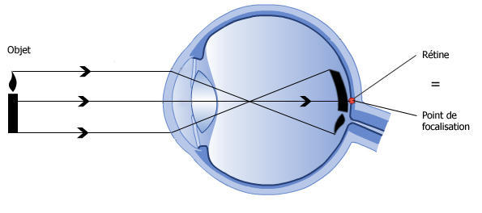
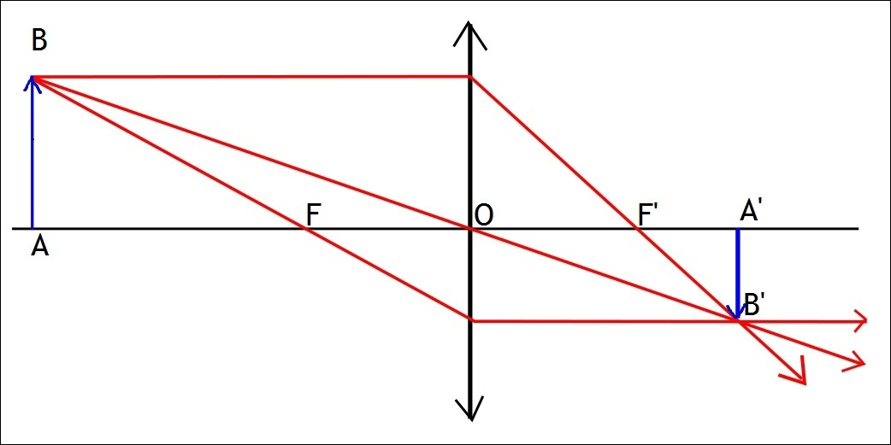
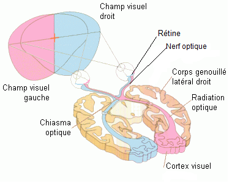
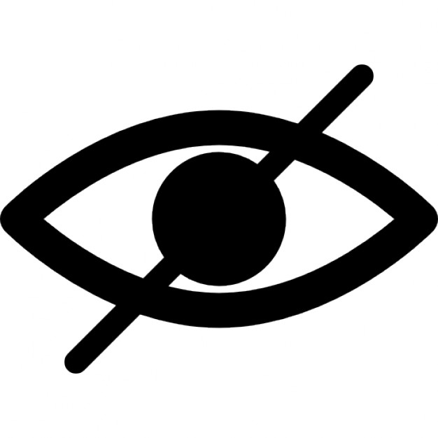

La structure de l'oeil
De façon générale, l’œil est composé de milieux transparents et d'une membrane.
De gauche à droite :
La cornée, située à l'avant de l'oeil, est une membrane transparente de plusieurs couches de cellules.
L'iris joue le rôle de diaphragme en régulant le niveau de luminosité entrant dans l'oeil en faisant varier le diamètre de la pupille.
Le cristallin est situé derrière l'iris entre l'humeur aqueuse et l'humeur vitrée (2 liquides transparents constitués essentiellement d'eau). Il s'apparente à une lentille convergente convexe élastique.
La transparence du cristallin est permise par l'absence de vaisseaux sanguins (vascularisation), la présence de protéines solubilisées dans le cytoplasme des cellules du cristallin (cristallines) mais également par l'absence d'espace entre les cellules qui le constituent.
Il est accommodable grâce aux ligaments suspenseurs, aux muscles ciliaires et aux procès ciliaires, permettant de faire diverger et converger les rayons lumineux sur la rétine afin de donner une image nette et précise.
L’œil est enveloppé par trois couches qui le recouvrent à partir des extrémités de la cornée (sauf le nerf optique). Ces trois couches sont la sclérotique, la choroïde et enfin la rétine.
La rétine est le siège principal de la vision. C'est elle qui tapisse le fond du globe oculaire avec 3 couches cellulaires.
Les photorécepteurs, récepteurs sensoriels de la vision : les cônes et les bâtonnets.
Les cônes (~5 millions) sont regroupés au niveau de la fovéa. Ils sont sensibles à une couleur primaire. Il en existe donc 3 types : ceux sensibles au rouge, ceux au vert et ceux bleu.
Les bâtonnets (~120 millions) sont très sensibles à l'intensité lumineuse mais peu à la couleur. Ils se situent en grande quantité à la périphérie de la rétine.
Les cellules bipolaires regroupent les informations d'un ou plusieurs photorécepteurs et en créent un influx nerveux.
Les cellules ganglionnaires composent le nerf optique. Il en existe différents types.
Celles de grandes tailles détectent les changements de contraste donc aussi les mouvements.
Celles de petites tailles soit analysent la forme et le détail, soit mesurent un contraste chromatique.
Il existe aussi un point aveugle, appelé papille, dénué de photorécepteurs au niveau du nerf optique.
Fermez votre œil gauche et fixez bien le rond de gauche, et uniquement le rond de gauche, approchez-vous à environ 30 cm de l'image, vous ne verrez plus le rond droit. Si vous le voyez toujours, rapprochez-vous ou éloignez-vous de l'image, il y aura un endroit précis où vous ne le verrez plus.
De même, avec l'oeil droit et le point de gauche.
Ce qui est étonnant c’est que si l’on rajoute un chat noir, un carré rouge ou un rond rose. Nous pouvons très bien les apercevoir. Pourtant le point noir reste invisible.
Le cheminement de l'image jusqu'au cerveau
Le cristallin permet de diriger les rayons lumineux vers les photorécepteurs en agissant comme une lentille convergente. Son rôle est essentiel car c'est grâce lui qui nous voyons ce qui nous entoure nettement.
Les photorécepteurs, seules cellules pouvant convertir la lumière en influx nerveux de la rétine, réagissent aux rayons de lumière qu'ils reçoivent.
L'influx nerveux produit est transmis aux cellules bipolaires, puis aux neurones ganglionnaires. Les neurones bipolaires regroupent l'information de plusieurs photorécepteurs, sauf au niveau de la fovéa où elles ne sont reliés qu'à un seul photorécepteur.
Ces cellules possèdent des prolongements cytoplasmiques qui les relient entre elles. Ceux sont uniquement les axones de ces neurones ganglionnaires qui vont sortir de l’œil pour former les nerfs optiques et rejoindre le premier relais visuel dans le cerveau.


Les nerfs optiques quittent donc les deux yeux et se réunissent pour former le chiasma optique. Celui-ci permet la décussation d’un certain nombre d'axones en provenance de la rétine, c’est-à-dire leur changement de côté pour assurer le traitement croisé de l’information visuelle.
Du chiasma partent les bandelettes optiques qui contiennent des fibres qui rejoignent les corps genouillés latéraux externes.
Desquels, des radiations optiques gagnent le cortex visuel (partie du cerveau traitant les informations visuelles) situés sur la surface interne du lobe occipital. Ainsi des données électriques arrivent au cerveau qui les traite et les interprète en images.

Les principales causes de la cécité

La cécité désigne le fait d'être dépourvu d'une acuité visuelle suffisante pour distinguer autre chose que des ombres. Les personnes souffrant de cécité peuvent être privées du sens de la vue partiellement (cécité partielle) ou totalement (cécité totale).
La cécité peut être due à une destruction des zones visuelles du cerveau ou d'une partie de l'œil. Certaines pathologies peuvent aussi en être la cause, comme le diabète, la sclérose en plaque ou la rubéole par exemple. Cependant la cataracte ou la trachome peuvent être traitées par opération chirurgicale.
La cataracte
Celle-ci est la première cause de cécité dans le monde, à l'origine de 40 % des cas. La cataracte est un trouble de la vision qui survient lorsque le cristallin perd de sa transparence.
Lorsque le cristallin s’opacifie, les rayons lumineux parviennent moins bien à la rétine, ce qui explique que la vision s’embrouille.
Le traitement est chirurgical (extraction du cristallin et implantation d'une lentille intraoculaire), il est courant dans les pays développés avec plus d'un million d'interventions réalisées chaque année aux Etats-Unis.
Le glaucome
Le glaucome est une maladie oculaire qui touche surtout les personnes de plus de 45 ans. Il est dû à une montée de la pression oculaire entraînant une atteinte du nerf optique et du champ visuel. Cette augmentation de la pression est le résultat d’une obstruction du filtre d’évacuation du liquide intraoculaire (ou humeur aqueuse).
L’augmentation de la pression oculaire conduit à une destruction progressive des fibres nerveuses de la tête du nerf optique. Les personnes souffrant de glaucome subissent un rétrécissement du champ de vision (~ vision tubulaire).
Le traitement est à la fois médical et chirurgical. La prévention du glaucome repose sur un dépistage systématique, rendu difficile car les premiers signes passent généralement inaperçus. Le glaucome est la troisième cause de cécité mondiale.
La DMLA
La dégénérescence maculaire liée à l'âge (DMLA) est la première cause de cécité dans les pays industrialisés.
C’est une maladie dégénérative de la rétine qui débute après l’âge de 50 ans.
Elle touche sélectivement la région maculaire, c'est à dire la zone centrale de la rétine, entraînant une perte progressive de la vision centrale. Elle laisse habituellement intacte la vision périphérique ou latérale.
Sa fréquence s'accroît avec l'âge, et elle atteint 25 % des personnes à partir de 80 ans.

La rétinite pigmentaire
Dégénérescence progressive, d'origine génétique, des bâtonnets (vision nocturne, détection des mouvements) puis des cônes (vision centrale et de jour), qui vont donc cesser de transformer la lumière en influx nerveux. Une partie de ces photorécepteurs rétiniens reste longtemps fonctionnelle (même en cas de cécité).